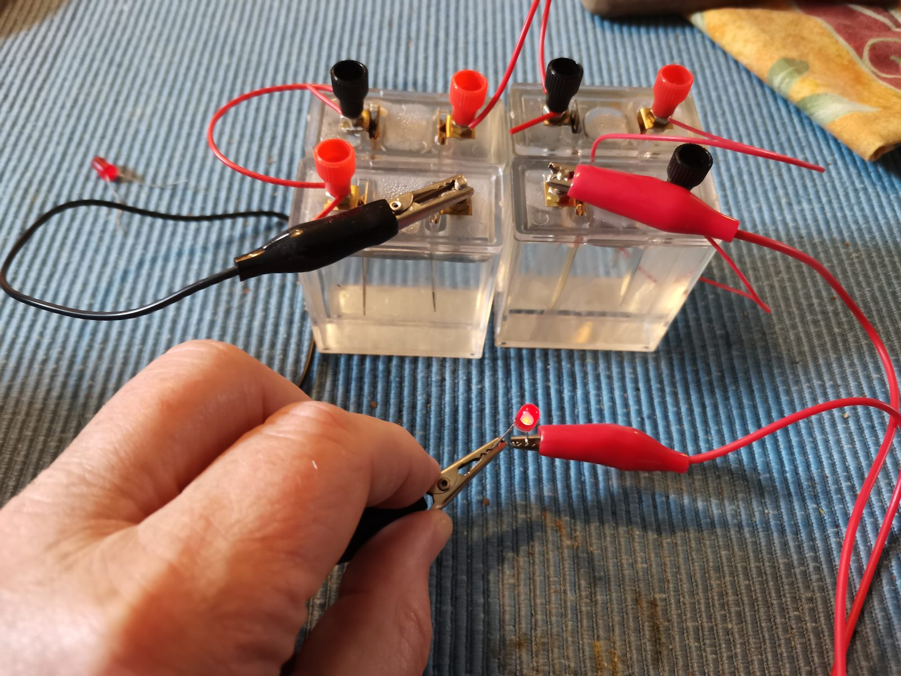
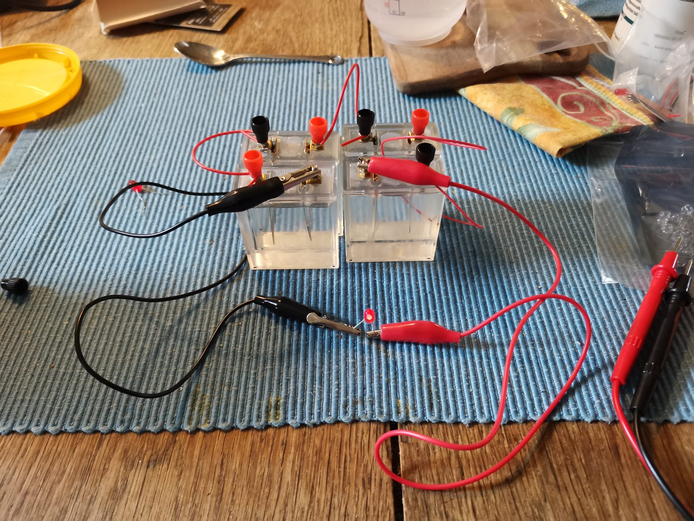
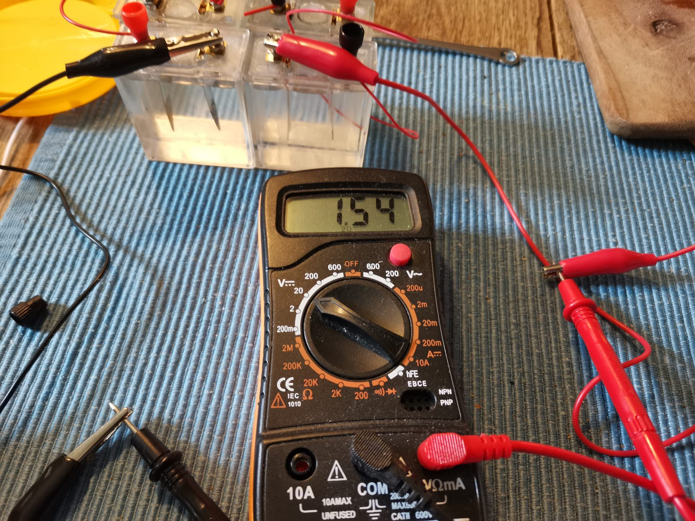

Four transparent cells with salt water, a zinc electrode and a copper electrode in each — and a red LED that lights up. All built on a kitchen table. Press the switch and see what happens inside the cell.
Each cell is a small transparent plastic container filled with salt water. In the container stand two electrodes: a piece of zinc (the grey nail) and a piece of copper. The cells are connected in series with wires and crocodile clips — positive terminal to negative terminal — and finally a red LED is inserted into the circuit.



It looks like a toy, but it is exactly the same principle as in Alessandro Volta's famous voltaic pile from 1800 — the world's first battery, built from zinc and copper discs with cardboard soaked in salt water between them. With four cells on a kitchen table we are thus repeating one of the most important experiments in the history of physics.
A galvanic cell converts chemical energy into electrical energy. The driving force is that zinc is much more willing to give up electrons than copper.
At the zinc electrode (the anode, negative terminal) zinc atoms dissolve as ions and leave two electrons behind in the metal:
The electrons run through the external wire — and through the LED — over to the copper electrode (the cathode, positive terminal). It is important to note here that the copper itself does not take part in the reaction! It simply acts as an inert electrode where the electrons are handed over to oxygen dissolved in the water:
The overall reaction is thus a slow "combustion" of zinc with oxygen:
So what does the salt do? The sodium and chloride ions take no part in the electrode reactions — they are the workhorses of conductivity. Inside the liquid the circuit has to be completed by migrating ions: positive ions towards the cathode, negative ions towards the anode. Pure water hardly conducts electricity at all; with a spoonful of salt the electrolyte becomes thousands of times more conductive.
The electromotive force (emf) of the cell under standard conditions is obtained from the standard potentials:
| Halvreaktion | E° (V) | Role here |
|---|---|---|
| Cu²⁺ + 2e⁻ → Cu | +0,34 | Takes no part (no Cu²⁺ in the solution) |
| O₂ + 2H₂O + 4e⁻ → 4OH⁻ | +0,40 | Cathode reaction on the copper surface |
| 2H₂O + 2e⁻ → H₂ + 2OH⁻ | −0,83 | Possible competitor when the oxygen has been used up |
| Zn²⁺ + 2e⁻ → Zn | −0,76 | Runs backwards: anode reaction |
In practice one typically measures 0.7–1.0 V per cell — well below the 1.16 V. There are three good reasons:
1. Overvoltage. Oxygen reduction on a copper surface is sluggish; an extra "push" (overpotential) is needed before the reaction runs at a noticeable rate.
2. Concentrations far from standard. The amount of dissolved oxygen is small (approx. 0.25 mM at room temperature), and the Nernst equation pulls the potential down: \[ E = E^\circ - \frac{RT}{nF}\ln Q \] 3. Internal resistance. As soon as current is drawn, the terminal voltage drops by \( U = \varepsilon - R_i \cdot I \). The internal resistance of the salt-water cell is large — which is why the diode glows faintly but clearly.
With the measurement of 1.54 V across four cells in series while the LED is lit, we get about 0.39 V per cell — considerably below the theoretical emf, because both the overpotentials and the voltage drop across the high internal resistance have been subtracted.
A red LED starts to glow faintly at around 1.5 V and is fully lit at 1.8–2.0 V. Drag the sliders and find out how many salt-water cells are needed.
In a series connection the voltages add up: \( U_{\text{total}} = n \cdot U_{\text{cell}} \). The current, on the other hand, is the same through all the cells — and it is limited by the total internal resistance of the cells. That is why the diode lights up, but only faintly.
1.54V ⎓
The multimeter is set to 20 V DC and here measures across four cells in series while the LED is connected and lit. So this is the terminal voltage under load: a current flows through the large internal resistance of the cells, and the voltage drop \( R_i \cdot I \) has already been subtracted. Take out the LED, and the voltmeter — which itself draws almost no current — instead shows something close to the cells' open-circuit voltage (emf), typically 0.7–1.0 V per cell. Try it: the difference between the two measurements gives you the internal resistance of the cells.
A good extra experiment: measure the voltage across one cell, two cells, three cells and four cells, and plot the voltage as a function of the number of cells. The points should lie on a straight line through the origin — the law of series connection, seen with your own eyes.